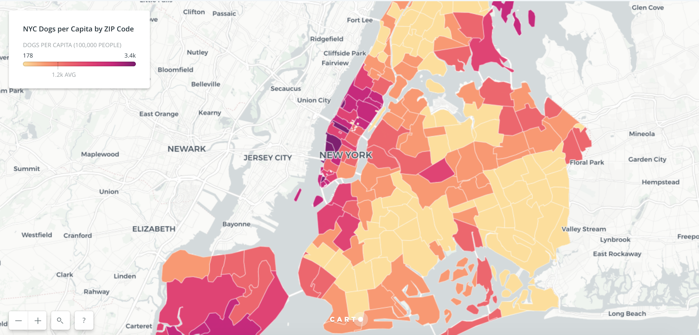

Projects
Mapping NFL Fandom Across the U.S.

About
I work at tech and ticketing startup SeatGeek, focusing on communications, data, and the intersection of the two. Before SeatGeek, I was a Venture for America fellow in Columbus, Ohio. Prior to that, I studied journalism at Northwestern.
At SeatGeek, my analysis and visuals have appeared in publications including the New York Times, ESPN, The Washington Post, and hundreds of local news outlets. I’ve also handled corporate communications, led brand development for our newly launched primary ticketing business, and developed our content strategy.
Breaking down age variance within NBA rosters
This piece for basketball analytics website Nylon Calculus is an analysis and visualization of player ages, and how they vary, across NBA rosters.
The code for the analysis as well as the charts can be found on Github.
Where do NFL Fans Live? Mapping Football Fandom Across the U.S.
By analyzing the behavior of NFL shoppers on SeatGeek, I was able to map “NFL Fandom” by county across the United States. The story, along with an interactive map, can be found here.
The data was prepared in QGIS and the map was built with Carto.
Charting 15 Years of Michael Jordan and LeBron James
Now that both NBA legends have played 15 NBA seasons, basketball fans are presented with an opportunity to revisit The Great Debate: MJ or LeBron? Charts of nine statistical categories shed some light on the course of each player’s career.
A full story can be found at this page. Code for the analysis and charts available on Github.
How College Basketball Teams Recruit by Position
Some college programs do their best recruiting for certain positions on the court — sometimes far surpassing their team-wide recruiting scores. This personal project analyzes how college basketball team recruiting grades vary by position.
The full heatmap that accompanies this story can be found at this page. Visuals built with Datawrapper and Highcharts.
New York City’s Most Dog-Dense Zip Codes

Some New Yorkers are disproportionately surrounded by four-legged neighbors. This story uses data from the New York City Department of Health and Mental Hygiene to map “Dogs per Capita” across NYC zip codes.
The dog density map was featured in CityLab. It will also be part of Imagine Exhibition's "Map Your World" exhibit opening Fall 2018 in Perth, Australia. Pictures from the opening can be seen here.
Map built with Carto.
Mapping Super Bowl 51 Ticket Demand
Which fanbases are shopping for Super Bowl 51 tickets? Patriots fans seemed confident throughout the NFL playoffs, while Falcons fans waited until Atlanta secured its spot in the game. This heatmap visualizes Super Bowl ticket shoppers on SeatGeek over the months leading up to the championship.
Map built with Carto.
SeatGeek’s Home Run Value Guide
SeatGeek’s guide to baseball season gives fans the best place to sit in each MLB stadium to catch a home run ball — for the best price. By combining ESPN’s Home Run Tracker with internal ticketing data, we can highlight the seating sections that are the best deals for those looking to bring home a unique souvenir.
I led ideation, analysis, copywriting, and project management for the tool’s design and development.
Cy Young Winners on Losing Teams
Jacob deGrom joined an exclusive club by winning the 2018 NL Cy Young Award: Cy Young winners who pitched for losing teams. This story, written before the award announcement, looks at the data behind deGrom and every Cy Young winner since 1956. The piece was also published on FanSided.
The charts made with Plotly, and the data was scraped from Baseball Reference. The code for the web scraping, analysis, and charts is available on Github.